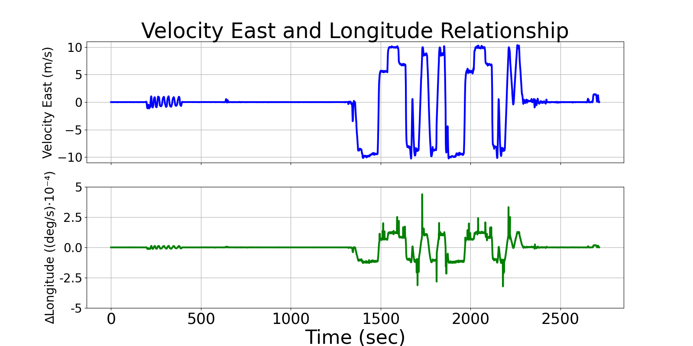
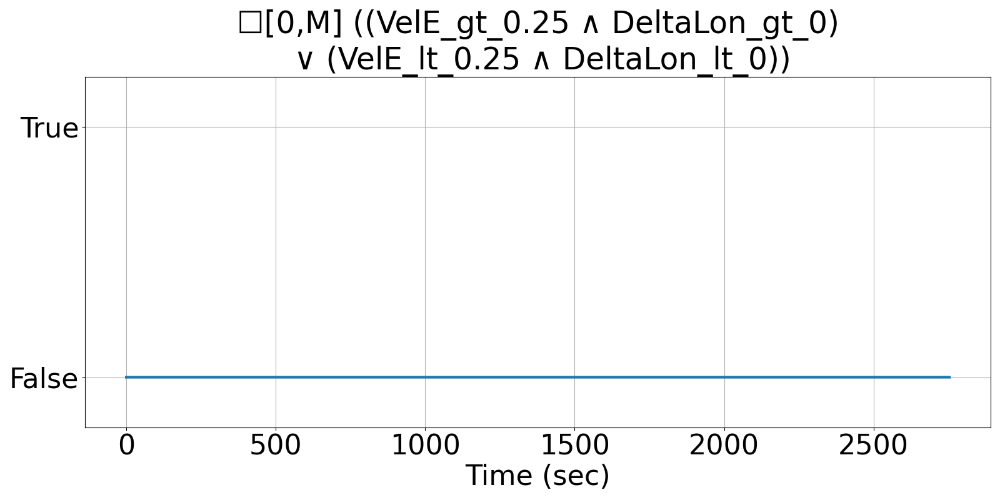

Integrating Runtime Verification into an
Automated UAS Traffic Management System
Matthew Cauwels, Abigail Hammer, Benjamin Hertz, Phillip H. Jones, Kristin Y. Rozier
This webpage contains supplementary specifications for "Integrating Runtime Verification into an
Automated UAS Traffic Management System" by M. Cauwels, A. Hammer, B. Hertz, P. H. Jones, and K. Y. Rozier
PM_UAS_2
Specification Description
When the VelE is positive and not small (>0.25m/s), the change in Long shall be greater than 0 at all instances (in the northern hemisphere). The opposite shall be true when VelE is negative and not small (<0.25m/s).
Signals Required
VelE, Long
Boolean Conversion of Signals to Atomic Inputs
DeltaLong = Long - PREV_LONG
VelE_gt_0.25: VelE > 0.25
VelE_lt_0.25: VelE < -0.25
DeltaLong_gt_0: DeltaLong > 0
DeltaLong_lt_0: DeltaLong < 0MLTL Specification
☐[0,M] [(VelE_gt_0.25 ∧ DeltaLong_gt_0) ∨ (VelE_lt_0.25 ∧ DeltaLong_lt_0)]
Fault Explanation
There is no change in Longitude due to the Velocity East, where there should be.
Additional Notes
Need magnitude of VelE to be small so that a DeltaLong should be non 0. This accounts for some of minor disturbances that might occur when stationary.
Figures

